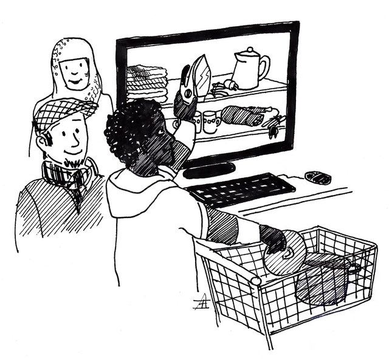

Virtuelles Warenhaus – Sachen clever spenden & finden
Du möchtest helfen und Flüchtlinge mit Sachspenden unterstützen?
Das ist sehr schön! Genau deswegen haben wir dieses „virtuelle Warenhaus“ eingerichtet.
Ein wichtiger Unterschied zu einem „echten Warenhaus“ ist, dass deine angebotene Sachspende erstmal nur als Fotografie mit Kurzbeschreibung im virtuellen Warenhaus „abgelegt“ wird.
Warum ein virtuelles Warenhaus?

Auf der einen Seite ist der Freundeskreis sehr dankbar über Sachspenden, auf der anderen Seite gibt es aber nicht immer sofort einen Abnehmer. Hinzu kommt, dass der nötige Lagerraum fehlt und die Koordination eine Menge Zeit verbraucht.
Zwei Freundeskreisler haben sich also Gedanken gemacht, wie Spenden die Geflüchteten erst dann erreichen, wenn sie die Spenden wirklich benötigen. Das Ganze ohne hohen Koordinierungsaufwand und ohne Notwendigkeit eines Lagers. Die ausgetüftelte Antwort lautet „Virtuelles Warenhaus“.
Die Spende wird dabei als Foto mit kurzer Beschreibung und Maßen in unserer Online-Datenbank abgelegt. Alle Ehrenamtlichen und Familien können die gespendeten Gegenstände einsehen und erst wenn es Bedarf bei den Flüchtlingen gibt, kommt es zur Abholung oder Lieferung der Sachspende.
Was passt ins virtuelle Warenhaus?
- Möbel – alles was man für die Ausstattung einer Wohnung braucht
- Elektrogeräte – von Wasserkocher über Lampe, Fernseher bis hin zu Computer
- Spielsachen – für Groß und Klein
- Fahrräder – besser direkt über die Rad-Werkstatt: Rad-Werkstatt@freundeleuwi.org
- Gartenmöbel
- Musikinstrumente
Eine Übersicht, welche Dinge besonders häufig gebraucht werden, findest du hier: Was wir besonders oft brauchen.
Kleidung bitte NICHT über das virtuelle Warenhaus
sondern z. B. über Spendenbasare oder die Kleiderkammer vom Roten
Kreuz.
Genauere Informationen gibt es über die Webseite des Roten Kreuzes Winnenden .
Geschäftsstelle:
Mühltorstraße 50, 71364 Winnenden
Telefon:
(07195) 65068
— Montag 9:00–11:00 Uhr (außerhalb Schulferien)
E-Mail:
info@drk-winnenden.de
So einfach stellst du deine Spende ein
In unserem neuen Online-Formular kannst du direkt vom Handy oder Computer aus Fotos hochladen und Maße sowie Standort bequem eingeben (Du musst keine Maße mehr selbst in Fotos hineinschreiben!):
🛋️ Zum Spenden-Formular (Möbel & Sachen abgeben)
Du möchtest vorab sehen, worauf es bei guten Fotos ankommt? Schau dir gerne unsere Beispielbilder & Foto-Tipps an.
Vielen Dank für deine Mithilfe!
Bitte habe Verständnis, falls nicht alles ganz schnell und reibungslos klappt. Wir alle arbeiten hier im Ehrenamt und versuchen – so gut es geht – zu helfen. Wer mitmachen möchte, ist herzlich willkommen.
*Datenschutz: Deine Adresse wird nicht im Internet öffentlich sichtbar sein. Wir benötigen die Adresse aber zur Kontaktaufnahme. Daher wird die Adresse auch im Computer gespeichert. Mit der Angabe deiner Adresse stimmst du dieser Vorgehensweise zu.